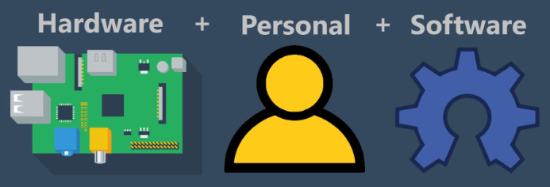

Sistemas de computación
Llamamos sistema de computación o sistema informático a aquellos que permiten almacenar y procesar información para devolver un resultado.
Por ejemplo, un ordenador es un sistema de computación que nos permite escribir documentos, navegar por Internet y jugar a juegos, o un robot es un sistema de computación que puede realizar tareas como la fabricación o la atención médica.
Los sistemas de computación tiene una gran cantidad de aplicaciones en la sociedad actual, como por ejemplo:
- Educación: se utilizan para impartir educación desde la educación infantil hasta la educación superior.
- Entretenimiento: se utilizan para jugar, ver películas y escuchar música.
- Investigación: se utilizan para realizar investigaciones científicas, médicas, sociológicas, ...
- Medicina: se utilizan para diagnosticar enfermedades, realizar cirugías y administrar tratamientos.
Componentes de un sistema de computación
Todo sistema de computación se compone de:

HARDWARE
El hardware son los componentes electrónicos, mecánicos y electromecánicos que forman la parte física de un sistema informático.
Es el responsable de ejecutar las tareas físicas necesarias para que el ordenador funcione, como por ejemplo, procesar datos o almacenar información.
A nivel básico, el hardware se clasifica de la siguiente manera:
- Unidad central de procesamiento (CPU): es la encargada de procesar las instrucciones de un programa informático y del dispositivo en general. Comúnmente se llama procesador.
- Memoria RAM: es la memoria a corto plazo de un dispositivo. Tiene como misión almacenar de forma temporal los datos de los programas con los que se está trabajando en ese momento.
- Memoria de almacenamiento de datos: es el lugar donde se almacenan los datos de un sistema informático de forma permanente. En ordenadores se suele llamar disco duro.
- Periféricos de salida: son los dispositivos encargado de enviar información hacia el exterior del sistema, generalmente en formato visual, impreso y auditivo. Como por ejemplo pantallas, impresoras o altavoz.
- Periféricos de entrada: son los dispositivos utilizados para introducir datos del exterior. Como por ejemplo ratón, teclado, micrófono, escáner o panal táctil.
SOFTWARE
El software comprende las partes lógicas de un sistema informático. Es decir, todo aquello que no se puede tocar.
Este segmento es el responsable de enviar instrucciones al hardware para ejecutar una diversidad de tareas. En pocas palabras, esta sección es la que interactúa con la parte la física de un sistema para que su funcionamiento sea posible.
El software contiene los siguientes elementos:
- Software del sistema: es todo aquello que es indispensable para el manejo de un sistema, por lo tanto, son elementos que un dispositivo o máquina debe poseer para poder funcionar: sistema operativo, controladores del sistema, BIOS, línea de comandos, cargador de arranque (bootloader), hipervisor, interfaz gráfica de usuario (GUI), utilidades y herramientas de programación.
- Software de aplicación: se refiere a las diversas aplicaciones o programas que un sistema puede utilizar: navegador web, juegos, editor de imágenes, reproductor de videos, antivirus, procesador de texto, calculadoras.
PERSONAL INFORMÁTICO
Son las personas que utilizan los sistemas informáticos. Incluye a los creadores de software, los que mantienen dichos programas y las personas que lo utilizan (el público en general).
Actividad 1: Tipos de equipos informáticos
Crea un póster con Canva con el título "Tipos de equipos informáticos" en el que aparezcan imágenes de ejemplos de sistemas informáticos que conozcas. Incluye una breve descripción de cada tipo de equipo. Inserta la tarea en tu portfolio digital.
Actividad 2: Periféricos
Crea un póster con Canva con el título "Periféricos" en el que aparezcan imágenes de los distintos periféricos de sistemas informáticos que conozcas. Clasifícalos según sean periféricos de entrada, de salida o de entrada-salida. Inserta la tarea en tu portfolio digital.